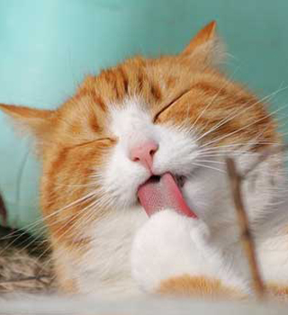
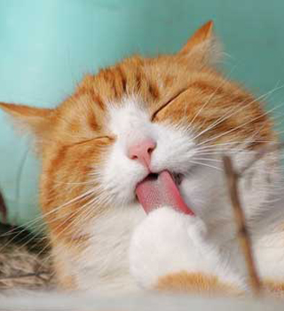

PET FAMILY


松饼猫
美国一只名叫松饼的苏折猫有圆滚滚的身材和大眼睛，大喇喇又爱撒娇的性格，让主人总能拍到许多可爱逗趣的照片，因此在网络上十分受欢迎
小犬
陆游《旅舍》诗：“勿为无年忧寇窃，狺狺小犬护篱门。”小犬的种类很多

仓鼠
仓鼠体长5-12厘米，除分布在中亚的小仓鼠外，其他种类的仓鼠两颊皆有颊囊，从臼齿侧延伸到肩部，因此得名为仓鼠。这种动物非常迷你和可爱，是一种很强势的独居动物，同时也是一种很受欢迎的宠物。
其他品种
这里有更多更好的品种等你发现
DECLARE
该网页系根据原创作者（来源未知）设计的模板（已确定开源）改编而成，为练习之用，不作商业用途，如有相关建议或交流，请联系本人邮箱:
wqn2156@163.com
 
